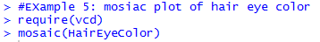
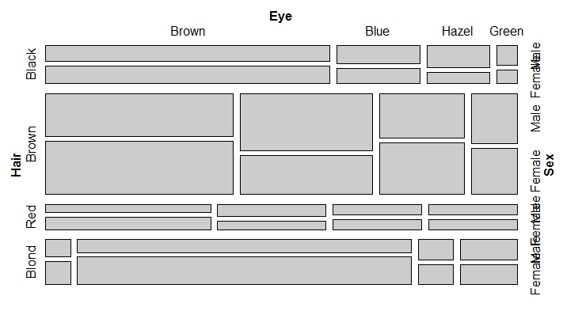

Learning Objective Five: Construct Mosaic plots
Introduction
A mosaic plot shows the relationship between two qualitative variables. The mosaic plot is based on conditional probability.
Knowledge
To illustrate how a mosaic plot is generated, we use an example from a data set called Berkeley 1973 Admissions data (NCSS.com). This data is of interest, because it was used to show that males were admitted at a higher rate than females. From figure 8 below (from ncss.com), the widths of the boxes are proportional to the percentage of females and males. There are 41% of females and 59% of males among the applicants. The heights of the boxes are proportional to the percentage admitted. There are 45% of the male applicants admitted, and 30% of the female applicants admitted (Figure 8). The boxes for admitted females and males are colored blue and the boxes for not admitted females and males are colored pink. By construction, the percent for each gender is the width of the box, and the area of each box is proportional to the corresponding cell frequency.
Figure 8. Mosaic plot of the relationship between gender and admission.
To generate a mosaic plot, we need to firstly install the R package vcd. The mosaic plot function is
mosaic(x, condvar = )
x: the table or formula
condvar: vector of integers or character strings indicating conditioning variables, if any. The table will be permuted to order them first.
Key Points to Remember
A mosaic plot shows the relationship between two categorical variables using colored boxes. The height and width of the boxes proportionally represent each variable value for each category.
The R function is mosaic() with the installation of the package vcd first.
Practice and Reflection
Practice
In example 5, we will plot the relationship between eye color and hair color from the R dataset HairEyeColor. The R code is

The mosaic plot is shown in figure 9

Figure 9. The mosaic plot of the relationship between eye color and hair color for males and females.
From figure 9, we observe that most of the males are in brown hair and brown eyes in the sample (the largest rectangle for male), and most of the females have brown hair and brown eyes (the largest rectangle for female).
Reflection
Activity 5: the data below shows a random sample of 400 University of Iowa undergraduate students. The students were classified according to gender and the college in which they are enrolled (Hogg & Tanis, 2006).
| Business | Engineering | Liberal Arts | Nursing | Pharmacy | |
|---|---|---|---|---|---|
| Male | 21 | 16 | 145 | 2 | 6 |
| Female | 14 | 4 | 175 | 13 | 4 |
Assessment
In 1912 the luxury liner Titanic, on its first voyage across the Atlantic, struck an iceberg and sank. Some passengers got off the ship in lifeboats, but many died. The two-way table gives information about adult passengers who lived and who died, by class of travel.
| Survival Status | ||
|---|---|---|
| Class of Travel | Survived | Died |
| First class | 197 | 122 |
| Second class | 94 | 167 |
| Third class | 151 | 476 |
Generate a mosaic plot to show the relationship between survival status and the class of travel.